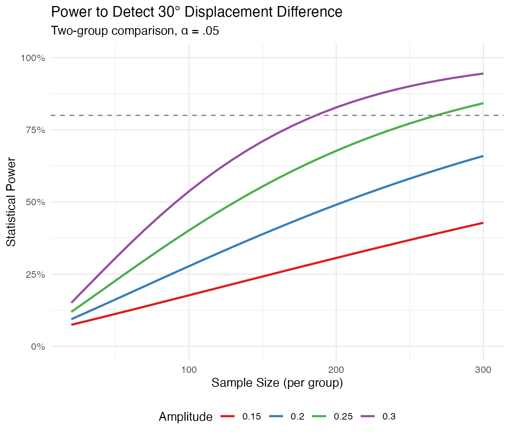

Introduction
Angular displacement (θ) indicates where on the circumplex a profile peaks. While amplitude tells us how much differentiation exists, displacement tells us what kind of differentiation—whether someone is primarily dominant, submissive, warm, cold, or some blend.
This vignette covers power analysis for displacement comparisons, based on Study 2 of Gilbert (2025).
The Key Insight: Precision Depends on Amplitude
The most important thing to understand about displacement is that its precision is inversely proportional to amplitude:
where:
- (empirically validated scaling constant)
- = amplitude
- = sample size
This has profound implications: when amplitude is low, displacement becomes essentially undefined—there’s no clear peak to locate.
# Show how SE changes with amplitude
amplitudes <- seq(0.10, 0.50, by = 0.05)
n <- 100
se_values <- 31 / (amplitudes * sqrt(n))
data.frame(
Amplitude = amplitudes,
SE_degrees = round(se_values, 1)
)
#> Amplitude SE_degrees
#> 1 0.10 31.0
#> 2 0.15 20.7
#> 3 0.20 15.5
#> 4 0.25 12.4
#> 5 0.30 10.3
#> 6 0.35 8.9
#> 7 0.40 7.8
#> 8 0.45 6.9
#> 9 0.50 6.2When Is Displacement Analysis Appropriate?
Displacement-focused analyses are appropriate when:
- Amplitude is adequate (≥ 0.15, ideally ≥ 0.20)
- The research question concerns angular location, not just whether differentiation exists
- Prior research suggests reliable displacement in the target construct
Displacement is not appropriate when:
- Expected amplitude is low (< 0.15)
- The profile is expected to be relatively flat
- You’re primarily interested in whether any differentiation exists (use amplitude instead)
Power Calculation
Use ssm_power_displacement() to calculate power for
detecting a displacement difference:
# Power to detect 30° difference with amplitude = 0.25, n = 100 per group
ssm_power_displacement(
delta_diff = 30,
amplitude = 0.25,
n = 100,
two_group = TRUE
)
#> $power
#> [1] 0.4017156
#>
#> $delta_diff
#> [1] 30
#>
#> $amplitude
#> [1] 0.25
#>
#> $n
#> [1] 100
#>
#> $se
#> [1] 17.53625
#>
#> $alpha
#> [1] 0.05
#>
#> $k_delta
#> [1] 31
#>
#> $two_group
#> [1] TRUE
#>
#> $type
#> [1] "displacement"
#>
#> $design
#> [1] "two_sample"Compare how power changes with amplitude:
# Same sample size, different amplitudes
amplitudes <- c(0.15, 0.20, 0.25, 0.30, 0.40)
results <- sapply(amplitudes, function(a) {
ssm_power_displacement(delta_diff = 30, amplitude = a, n = 100)$power
})
data.frame(
Amplitude = amplitudes,
Power = round(results, 3)
)
#> Amplitude Power
#> 1 0.15 0.177
#> 2 0.20 0.278
#> 3 0.25 0.402
#> 4 0.30 0.537
#> 5 0.40 0.781Notice how dramatically power increases with amplitude!
Sample Size Calculation
Use ssm_sample_size_displacement() to determine required
sample sizes:
# Sample size for 30° difference, amplitude = 0.25, 80% power
ssm_sample_size_displacement(
delta_diff = 30,
amplitude = 0.25,
power = 0.80
)
#> $n
#> [1] 269
#>
#> $achieved_power
#> [1] 0.801186
#>
#> $target_power
#> [1] 0.8
#>
#> $delta_diff
#> [1] 30
#>
#> $amplitude
#> [1] 0.25
#>
#> $alpha
#> [1] 0.05
#>
#> $k_delta
#> [1] 31
#>
#> $se
#> [1] 10.69204
#>
#> $two_group
#> [1] TRUE
#>
#> $type
#> [1] "displacement"
#>
#> $design
#> [1] "two_sample"Sample Size Depends Heavily on Amplitude
# Required n for different amplitudes
amplitudes <- c(0.15, 0.20, 0.25, 0.30, 0.40)
results <- sapply(amplitudes, function(a) {
ssm_sample_size_displacement(delta_diff = 30, amplitude = a)$n
})
data.frame(
Amplitude = amplitudes,
N_per_group = results
)
#> Amplitude N_per_group
#> 1 0.15 745
#> 2 0.20 420
#> 3 0.25 269
#> 4 0.30 187
#> 5 0.40 105With low amplitude (0.15), you need nearly 4x the sample size compared to moderate amplitude (0.30).
Precision Reference Table
The ssm_displacement_precision_table() function
generates a quick reference:
ssm_displacement_precision_table()
#> Amplitude n = 50 n = 100 n = 200 n = 500
#> 1 0.10 43.8 31.0 21.9 13.9
#> 2 0.15 29.2 20.7 14.6 9.2
#> 3 0.20 21.9 15.5 11.0 6.9
#> 4 0.25 17.5 12.4 8.8 5.5
#> 5 0.30 14.6 10.3 7.3 4.6
#> 6 0.40 11.0 7.8 5.5 3.5This shows the standard error of displacement (in degrees) for each combination of amplitude and sample size.
Visualizing Power Curves
# Power curves for different amplitudes
ns <- seq(20, 300, by = 10)
amplitudes <- c(0.15, 0.20, 0.25, 0.30)
results <- expand.grid(n = ns, amplitude = amplitudes)
results$power <- mapply(function(n, a) {
ssm_power_displacement(delta_diff = 30, amplitude = a, n = n)$power
}, results$n, results$amplitude)
ggplot(results, aes(x = n, y = power, color = factor(amplitude))) +
geom_line(linewidth = 1) +
geom_hline(yintercept = 0.80, linetype = "dashed", color = "gray50") +
scale_y_continuous(labels = scales::percent_format(), limits = c(0, 1)) +
scale_color_brewer(palette = "Set1", name = "Amplitude") +
labs(
x = "Sample Size (per group)",
y = "Statistical Power",
title = "Power to Detect 30° Displacement Difference",
subtitle = "Two-group comparison, α = .05"
) +
theme_minimal(base_size = 12) +
theme(legend.position = "bottom")
Worked Example: Narcissism and Leadership Style
Suppose you want to compare the interpersonal style of narcissistic vs. non-narcissistic leaders. Prior research suggests:
- Narcissistic leaders show dominant-hostile style (θ ≈ 315°)
- Non-narcissistic leaders show dominant-warm style (θ ≈ 45°)
- Expected displacement difference: ~90° (a full quadrant)
- Expected amplitude: ~0.25 (medium)
# How many participants per group?
result <- ssm_sample_size_displacement(
delta_diff = 90,
amplitude = 0.25,
power = 0.80
)
cat("Required sample size:", result$n, "per group\n")
#> Required sample size: 30 per group
cat("Total N:", result$n * 2, "\n")
#> Total N: 60
cat("Achieved power:", round(result$achieved_power * 100, 1), "%\n")
#> Achieved power: 80.3 %For a more conservative 45° difference:
result <- ssm_sample_size_displacement(
delta_diff = 45,
amplitude = 0.25,
power = 0.80
)
cat("Required sample size:", result$n, "per group\n")
#> Required sample size: 120 per group
cat("Total N:", result$n * 2, "\n")
#> Total N: 240Unequal Group Sizes
For unequal allocation, use
ssm_sample_size_displacement_diff():
# 2:1 allocation ratio
ssm_sample_size_displacement_diff(
delta_diff = 30,
amplitude = 0.25,
ratio = 2
)
#> $n1
#> [1] 202
#>
#> $n2
#> [1] 403
#>
#> $n_total
#> [1] 605
#>
#> $achieved_power
#> [1] 0.8013471
#>
#> $target_power
#> [1] 0.8
#>
#> $delta_diff
#> [1] 30
#>
#> $amplitude
#> [1] 0.25
#>
#> $alpha
#> [1] 0.05
#>
#> $k_delta
#> [1] 31
#>
#> $ratio
#> [1] 2
#>
#> $type
#> [1] "displacement_difference"
#>
#> $design
#> [1] "two_sample"Guidelines for Displacement-Focused Studies
Verify amplitude first: Before planning a displacement study, confirm that expected amplitude is at least 0.15, ideally 0.20+.
Consider the amplitude-precision tradeoff: If amplitude is uncertain, run sensitivity analyses across a range of plausible values.
-
When amplitude is low, reconsider the research question: If expected amplitude is < 0.15, displacement may not be the right focus. Consider:
- Testing elevation differences instead
- Testing amplitude differences
- Using a different measure with stronger circumplex structure
Report amplitude alongside displacement: Always report amplitude estimates and CIs alongside displacement findings, so readers can evaluate precision.
Summary
| Amplitude | Displacement Reliability | Recommendation |
|---|---|---|
| < 0.10 | Essentially undefined | Do not analyze displacement |
| 0.10-0.15 | Highly unstable | Caution; very large N needed |
| 0.15-0.20 | Moderately reliable | Feasible with adequate N |
| > 0.20 | Reliable | Standard power analysis applies |
References
Gilbert, K. J. (2025). Powering the circumplex: A practical guide to sample size for the structural summary method.
Zimmermann, J., & Wright, A. G. C. (2017). Beyond description in interpersonal construct validation: Methodological advances in the circumplex Structural Summary Approach. Assessment, 24(1), 3-23.